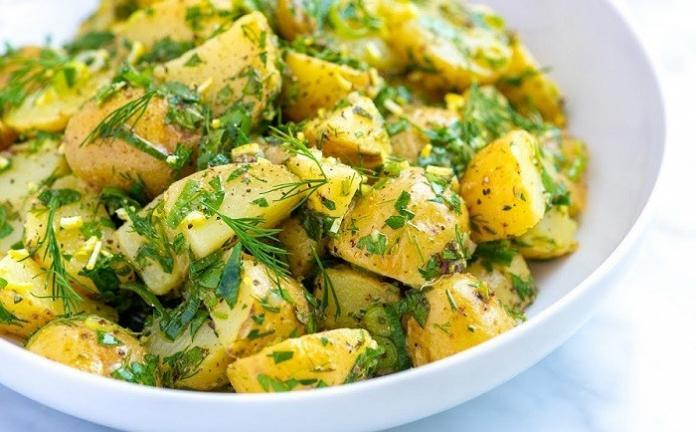

PATATES SALATASI TARİFİ

MALZEMELER
- 5 tane orta boy patates
- Yarım demet maydanoz
- 4-5 yaprak marul
- yarım demet dereotu
- 1 tutam taze nane
- 3-4 dal taze soğan
- 1 adet limon
- 3-4 yemek kaşığı zeytinyağ
- Baharatlar
HAZIRLANIŞI
- İlk olarak patatesleri haşlamaya bırakalım.
- Bu sırada yeşillikleri güzelce yıkayalım.
- Haşlanan patatesleri doğrayalım.
- Yeşillikleri de doğradıktan sonra patateslerin üstüne ilave edelim.
- Son olarak zeytinyağ ve baharatları ekleyerek güzelce karıştıralım.
- AFİYET OLSUN...